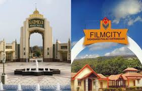

The MGR film City is a film studio complex situated in Taramani. Named after the popular film actor and long time Chief Minister of Tamil Nadu, late M. G. Ramachandran, MGR film City is a popular tourism and recreation centre. Established in 1994, MGR film city attracts both filmmakers and the tourists. Visitors can take a look at the indoor studios as well as the outdoor shooting locations that include replicas of various structures and landscaped gardens.
MGR film City houses the MGR Film and Television Institute and the MGR Knowledge Park. MGR film City remains open from 8 am to 8 pm and the entry fee is Rs. 25/-. MGR film City is a preferred destination for the whole family. The temple of Madhya Kailash can also be visited while at the film city. As the weather in Chennai can be quite harsh during the summer months, the best time to visit MGR film City is between the months of October and February when the weather is at its best.MGR film City can be easily reached by bus and cab as it is located at a distance of 15 km from Chennai.
